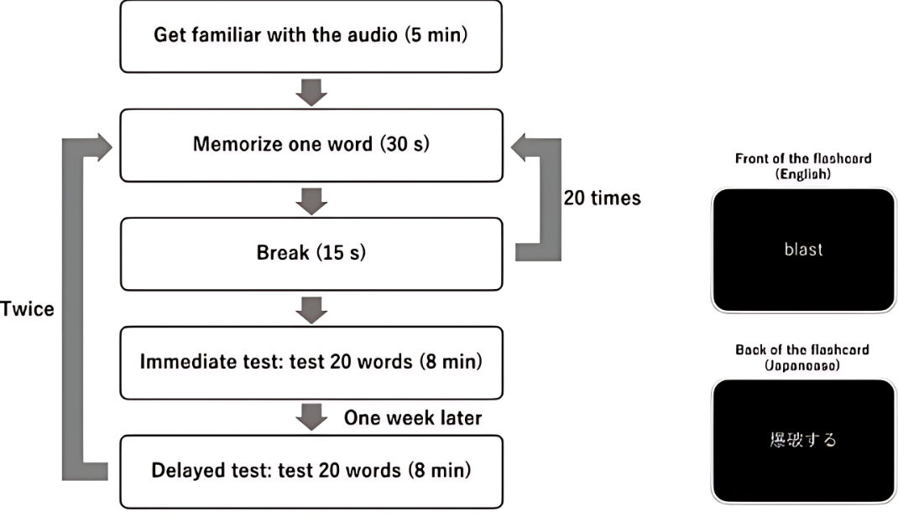

Projects / Research
Binaural Vocabulary
Learning English words through binaural sounds that act out their meaning

Picture dictionaries pair words with images; this project builds the audio counterpart. For each English word, a sound that acts out its meaning was recorded with a dummy-head microphone, so it moves around, approaches, or whispers close to the listener. The study asks whether this spatial rendering by itself helps learners remember new words.
Crowd workers judged whether each candidate word's meaning could be conveyed by sound, and 40 words at roughly CEFR B2 or above were recorded. Twenty high school students learned two matched 20-word sets, one with binaural and one with monaural audio, and took multiple-choice tests immediately and one week later.
A two-way repeated-measures ANOVA showed main effects of audio condition and time, with no significant interaction. Mean scores out of 20 were 17.5 (binaural) vs 15.6 (monaural) immediately and 12.4 vs 10.5 after one week. Concrete, sound-related words were remembered best. An exploratory EEG study with seven other participants found a non-significant theta-band trend.
Materials

Listen
Use headphones. Each track is a stereo WAV.
- whirl
- aerate
- grotto
- loony
- snoop
Publications
- 2022.10ProceedingsEffects of Binaural Audio on English Vocabulary LearningKosuke Shimizu, Shogo Fukushima, Takeshi NaemuraICCE 2022, pp. 665–667 · APSCE Library
- 2025.11JournalEnhancing of Vocabulary Learning by the Representation of the Meaning of Words with Binaural AudioKosuke Shimizu, Shogo Fukushima, Hirokazu Doi, Takeshi NaemuraTransactions of Human Interface Society 27(4), pp. 249–260 · DOI 10.11184/his.27.4_249 · Manuscript PDF